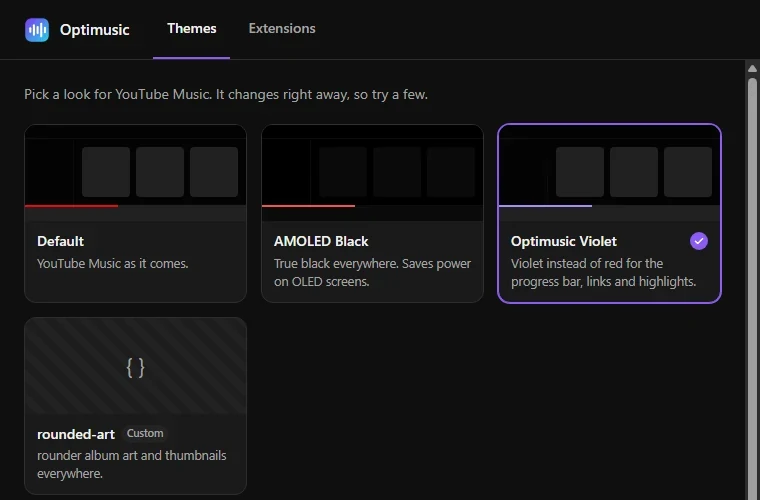
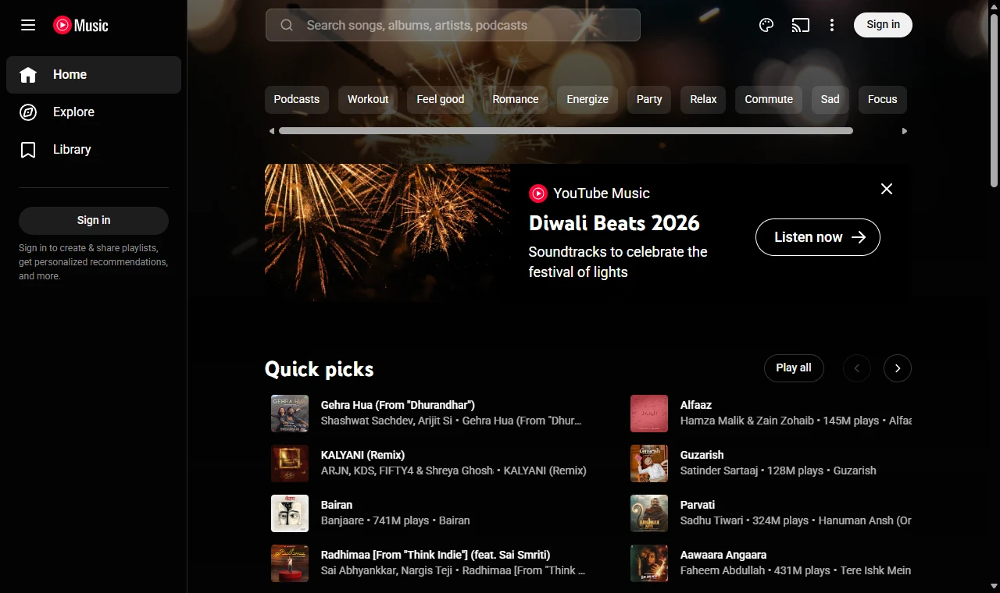
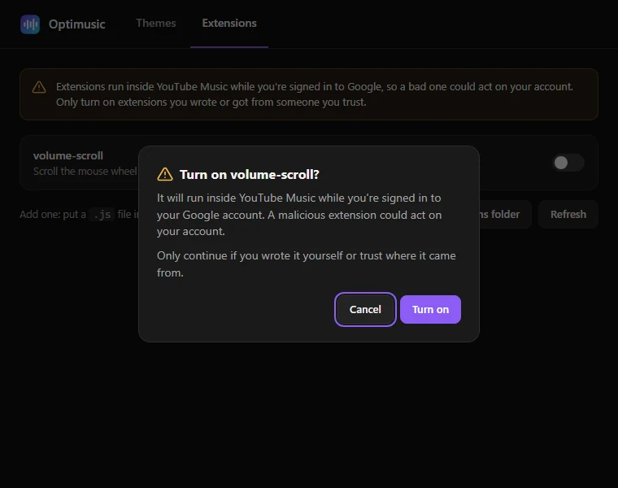

Themes and extensions
AMOLED Black, Optimusic Violet, or your own CSS, a bit like Spicetify. Optional extensions stay off until you turn them on.

A lightweight, unofficial desktop app for Windows, Linux and macOS, with media keys, a tray player and themes.

Electron apps ship their own copy of Chromium. Optimusic uses the browser engine your system already has, then tunes it to use less.
Playing music with the window open, on Windows, measured with bench.ps1 from the repo. Hidden in the tray, Optimusic uses about 150 MB. Your numbers will vary with your PC.
It's the real YouTube Music, signed in with your own account. Optimusic adds the desktop parts around it.
AMOLED Black, Optimusic Violet, or your own CSS, a bit like Spicetify. Optional extensions stay off until you turn them on.

Shows the song, artist and cover art, with a link to the track. It clears when you pause.
Play, pause and skip from your keyboard, the system media controls or the tray.
Off, notify, or automatic. Every update is signed and checked before it installs, and automatic updates wait until the next start so a song is never cut off.
Close the window and the music keeps playing. Hidden, it stops drawing and trims its memory.
Every line is on GitHub under the MIT license, so you can read exactly what it does.

Free and open source. These links always get the newest version.
sudo apt install ./Optimusic-Linux.deb. The AppImage runs anywhere.Older versions and release notes are on the Releases page.
No. Optimusic is an independent, open-source project, not made or endorsed by Google or YouTube. It shows the real YouTube Music website and adds desktop features around it.
You sign in on Google's own sign-in page. Optimusic doesn't read or store your password, and its code is public, so anyone can check. Themes and extensions never run on Google's sign-in pages.
The installers aren't signed with a paid code-signing certificate yet, so your system doesn't recognise the publisher. On Windows choose More info, then Run anyway. On macOS open System Settings, Privacy & Security, and click Open Anyway.
No. Downloading isn't allowed by YouTube's terms. YouTube Music Premium offers offline downloads in its official phone apps.
No. It works the same as YouTube Music in a browser, including ads on the free plan.
Pick Off, Notify me or Install automatically from the tray. Notify me is the default: a new version shows up in the tray menu and nothing downloads until you click it.